Exploring Outputs from segclust2d
R. Patin
2021-09-08
Source:vignettes/explore_outputs.Rmd
explore_outputs.RmdSegmentation
library(segclust2d)
data(simulshift)
shift_seg <- segmentation(simulshift, lmin = 300, Kmax = 25, seg.var = c("x","y"), subsample_by = 60, scale.variable = FALSE)
#> Segmentation on x and ysegmentation() returns an object of segmentation-class for which several methods are available (see section exploring outputs). The most important one is plot.segmentation, that shows the segmented time-series.
plot(shift_seg)
#> Lavielle-selected number of segment : 3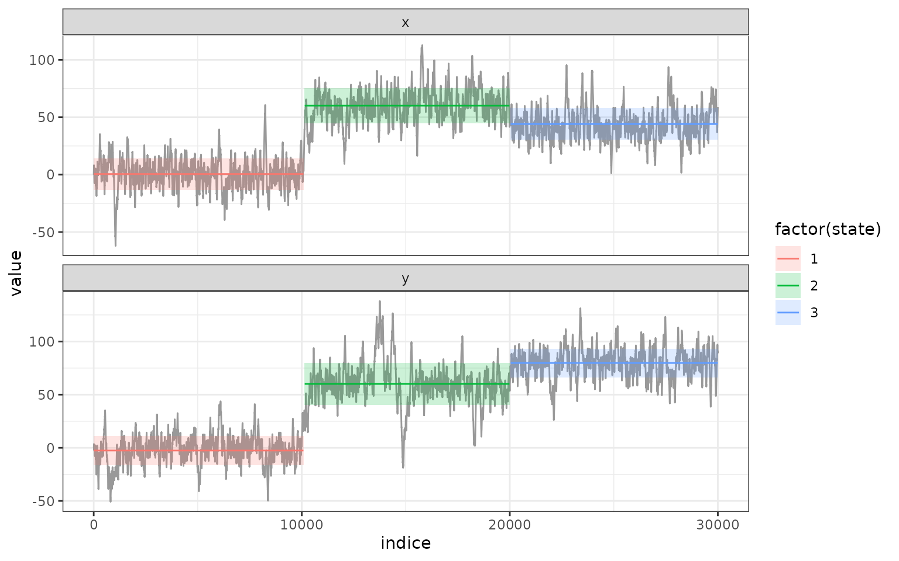 By default, plot.segmentation shows the best segmentation, but one can specify a given number of segments (inside the range 1:Kmax). See segmentation-class for additional informations.
plot(shift_seg, nseg = 10)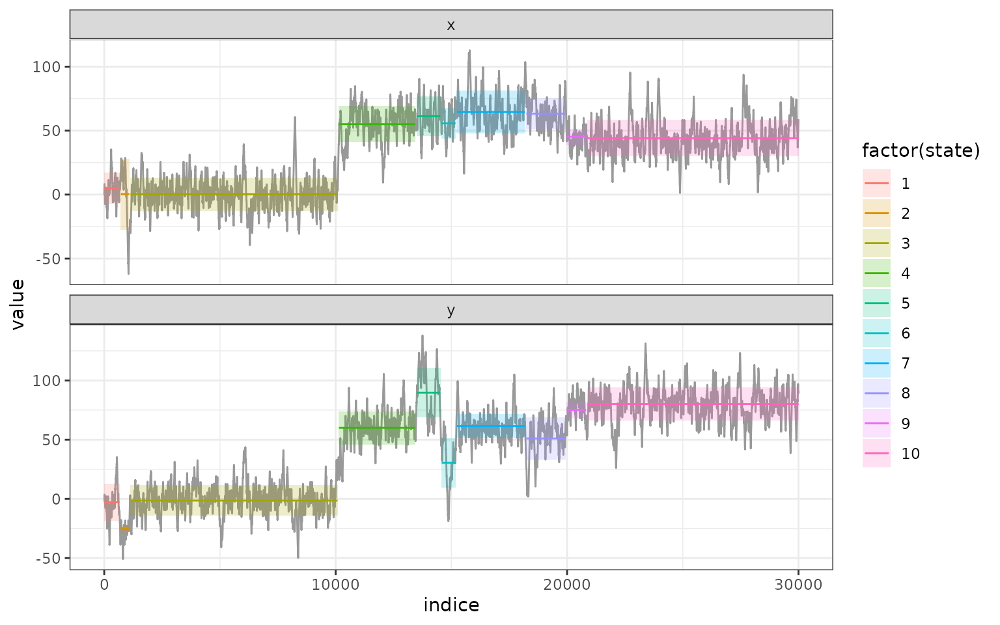
Segmentation/Clustering
data(simulmode)
simulmode$abs_spatial_angle <- abs(simulmode$spatial_angle)
simulmode <- simulmode[!is.na(simulmode$abs_spatial_angle), ]
mode_segclust <- segclust(simulmode, Kmax = 20, lmin=10, ncluster = c(2,3), seg.var = c("speed","abs_spatial_angle"), scale.variable = TRUE)
#> Segmenting - 2 class
#> Smoothing - 2 class
#> Segmenting - 3 class
#> Smoothing - 3 classsegclust() returns also an object of segmentation-class for which the same methods are available (see section exploring outputs). The most important one is again plot.segmentation, that shows the segmented time-series.
plot(mode_segclust)
#> BIC-selected number of class : 3 class.
#> BIC-selected number of segment : 15
By default for a segmentation/clustering, plot.segmentation shows the best segmentation, maximizing BIC-based penalized likelihood, but one can specify a given number of cluster/or segment See segmentation-class for additional informations.
plot(mode_segclust, ncluster = 3)
#> User-specified number of class :3
#> BIC-selected number of segment : 15
plot(mode_segclust, ncluster = 3, nseg = 7)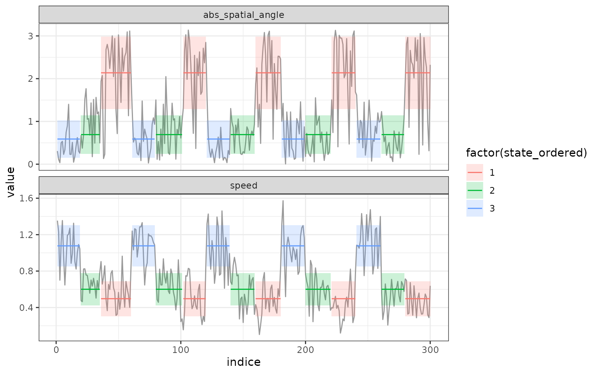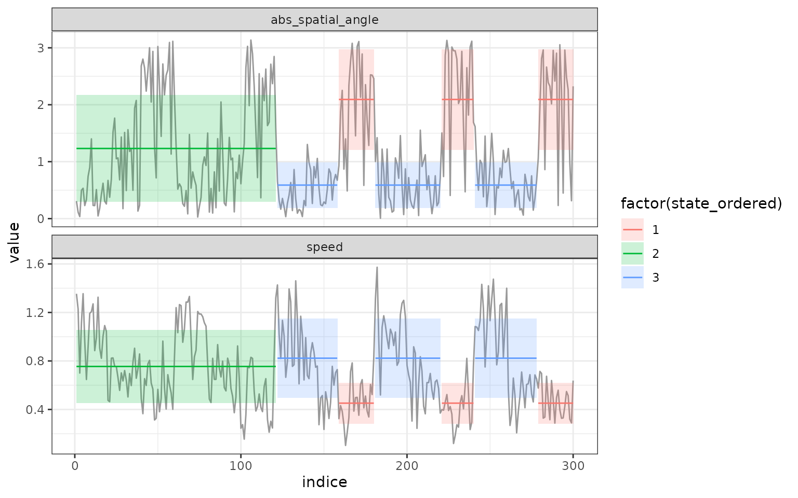
Exploring outputs
Both functions segmentation() and segclust() returns a segmentation-class object for which several methods are available.
Extract information about predicted states.
augment - get state for each point.
augment.segmentation() is a method for broom::augment. It returns an augmented data.frame with outputs of the model - here, the attribution to segment or cluster
augment(shift_seg)
#> Lavielle-selected number of segment : 3
augment(mode_segclust)
#> BIC-selected number of class : 3 class.
#> BIC-selected number of segment : 15By default augment.segmentation will use data for the best segmentation (maximum of penalized log-Likelihood for segclust() and Lavielle’s criterium for segmentation()) but one can ask for a specific segmentation :
segment - Extract each segment (begin, end, statistics)
segment() allows retrieving informations on the different segment of a given segmentation. Each segment is associated with the mean and standard deviation for each variable, the state (equivalent to the segment number for segmentation) and the state ordered given a variable - by default the first variable given by seg.var. One can specify the variable for ordering states through the order.var of segmentation() and segclust().
states - statistics about each states.
states() return information on the different states of the segmentation. For segmentation() it is quite similar to segment(). For segclust, however it gives the different cluster found and the statistics associated.
log-Likelihood - logLik
logLik.segmentation() return information on the log-likelihood of the different segmentations possible. It returns a data.frame with the number of segment, the log-likelihood and eventually the number of cluster.
BIC-based penalized likelihood (segclust)
BIC.segmentation() return information on the BIC-based penalized log-likelihood of the different segmentations possible. It returns a data.frame with the number of segment, the BIC-based penalized log-likelihood and the number of cluster. For segclust() only. Note that this does not truly returns a BIC.
BIC(mode_segclust)Graphical outputs
segmentation-class also provides methods for plotting results of segmentations. All plot methods use ggplot2 package and return ggplot objects that can be further modified and customized using classical ggplot2 (see ggplot2 function reference.
plot.segmentation - series plot of the segmentation
plot.segmentation() can be used to plot the output of a segmentation as a series-plot. A specific segmentation can be chosen with nseg and ncluster arguments. If the original data had a specific x-axis, like a POSIXct time column, this can be specified using argument xcol. By default, data are plotted by their number. If you want clusters or segments to be ordered according to one of the variables, this can be specified using argument order. By default segmentation/clustering output are plotted using ordered states.
plot(shift_seg)
#> Lavielle-selected number of segment : 3
plot(mode_segclust, ncluster = 3, nseg = 10, xcol = "indice", order = T) 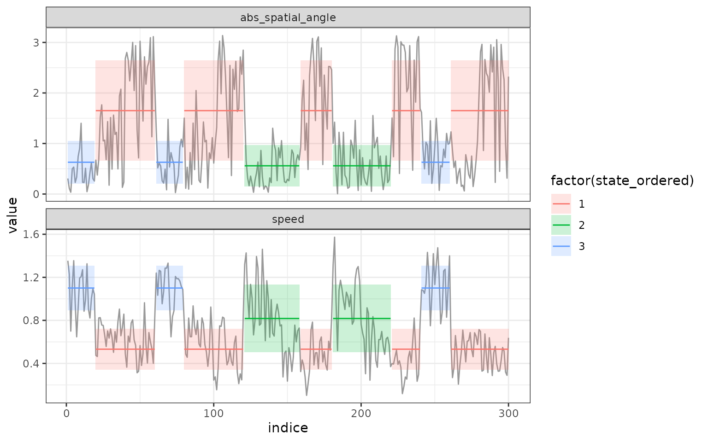
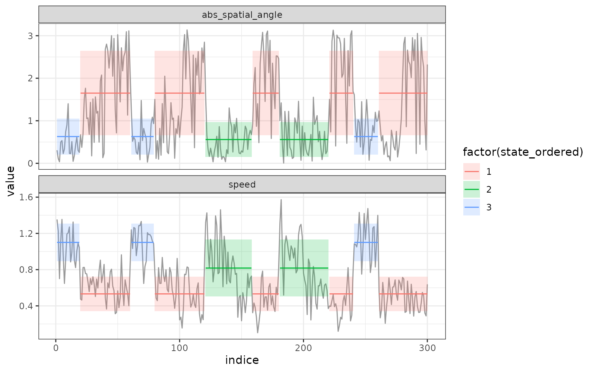
Here there was a fake dateTime column in POSIXct format in the data.frame originally given to the function segclust. We can then plot the results of the segmentation according the the time given.
plot(mode_segclust, ncluster = 3, nseg = 10, xcol = "dateTime", order = T)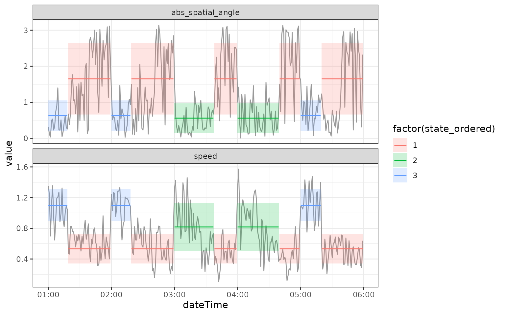
segmap - map the segmentation
segmap() plot the results of the segmentation as a map. This can be done only if data have a geographic meaning. Coordinate names are by default “x” and “y” but this can be provided through argument coord.names.
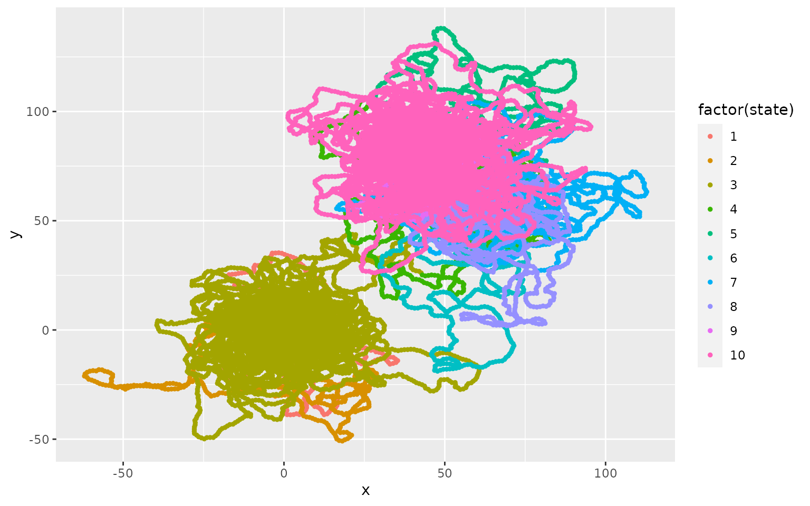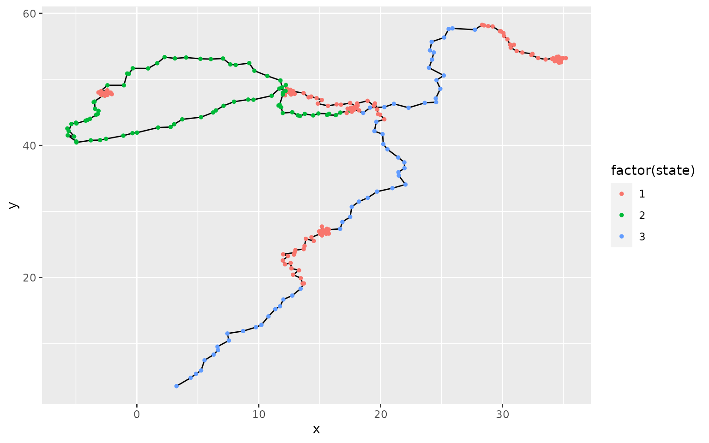
plot_likelihood
plot_likelihood() plot the log-likelihood of the segmentation for all the tested number of segments and clusters.
plot_likelihood(shift_seg)
plot_likelihood(mode_segclust) 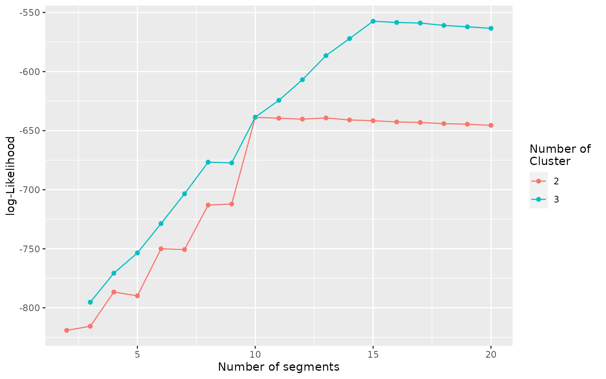
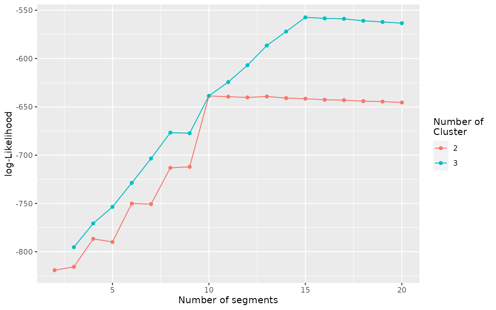
plot_BIC - plot the BIC-based penalized likelihood
plot_BIC() plot the BIC-based penalized log-likelihood of the segmentation for all the tested number of segments and clusters.
plot_BIC(mode_segclust)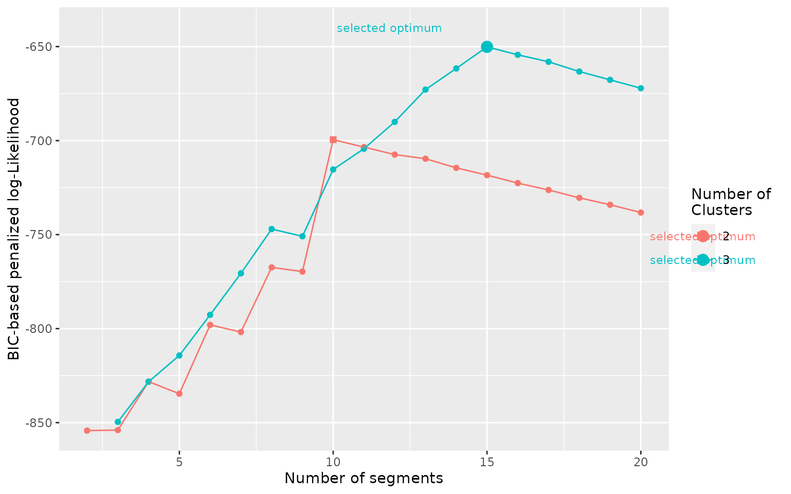